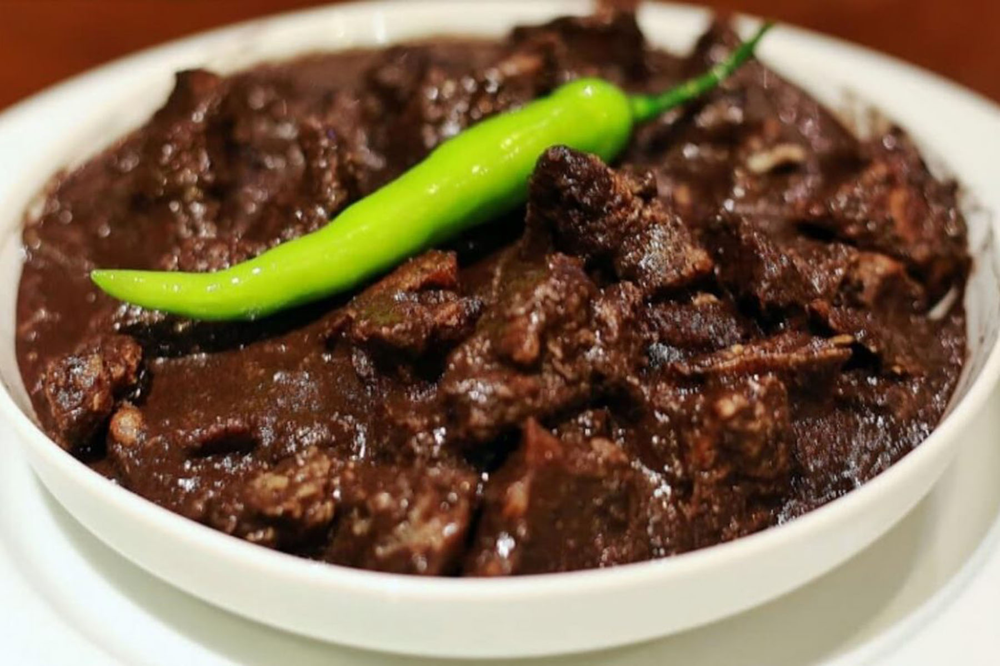

Description
Dinuguan is a Filipino savory stew usually of pork offal (typically lungs, kidneys, intestines, ears, heart and snout) and/or meat simmered in a rich, spicy dark gravy of pig blood, garlic, chili (most often siling haba), and vinegar.
- 2 lbs. pork shoulder cubed
- 1¼ cups pork blood
- 1 piece Knorr Pork Cube
- 4 pieces long peppers
- 2 pieces onion chopped
- 6 cloves garlic minced
- 2 cups water
- ¾ cup white vinegar
- 3 pieces dried bay leaves
- 3 tablespoons cooking oil
- 1 tablespoon granulated white sugar
- salt and grounded pepper to taste
- Heat oil in a cooking pot
- Saute onion for 30 seconds. Add garlic. Continue to cook until onion softens./li>
- Add pork. Saute for 3 to 5 minutes.
- Pour water. Let boil. Add bay leaves and vinegar. Let the liquid re-boil.
- Add Knorr Pork Cube. Stir. Cover and simmer for 1 hour. Note: add water as needed.
- Add long green peppers and pour pork blood into the pot. Stir. Continue to cook between low to medium heat for 15 minutes while stirring every 3 minutes.
- Add sugar and season with salt and ground black pepper.
- Transfer to a serving bowl. Enjoy.
|